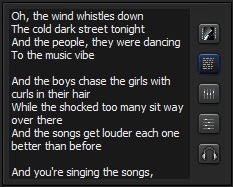

|
Lyrics
|
Nemp kann zu den Titeln in der Medienbibliothek auch die Liedtexte (Lyrics) verwalten und beim abspielen anzeigen.

Die Lyrics können per Hand im Eigenschafts-Dialog zu jedem Titel eingegeben werden.
Einfacher ist aber, die Liedtext automatisch aus dem Internet von
http://lyrics.wikia.com herunterzuladen. Markieren Sie dazu einige
Titel in der Medienbibliothek und wählen Sie über das
Kontextmenü "Lyrics holen".